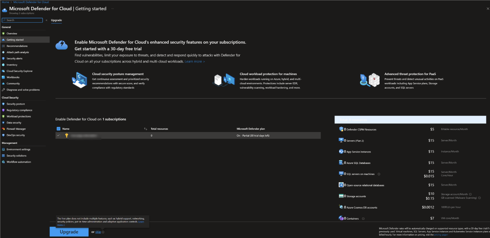
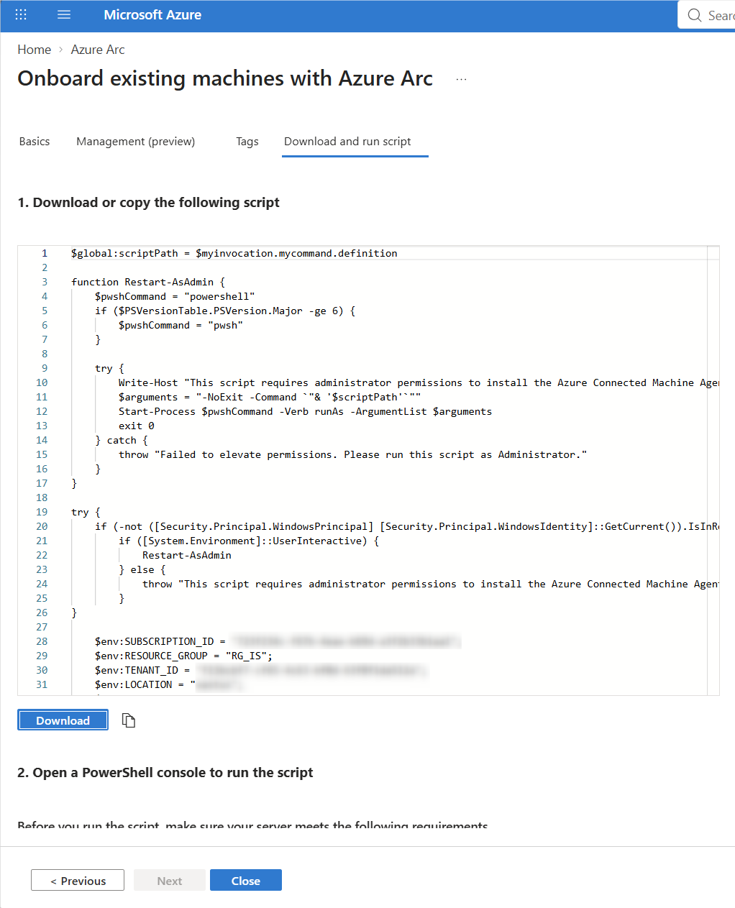
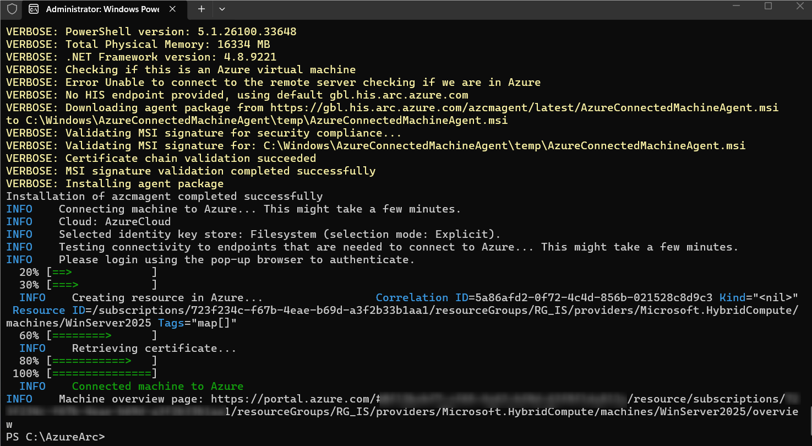
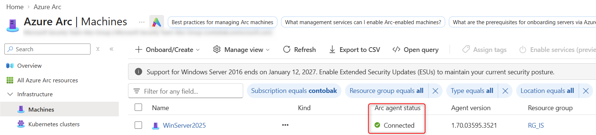
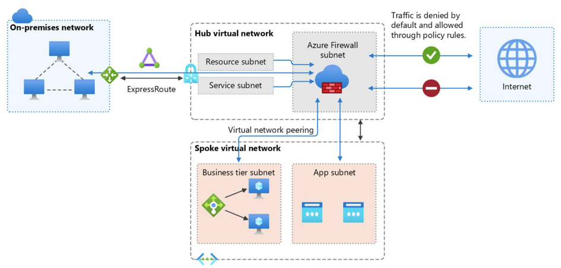

A practical guide to protecting identities, infrastructure, data and applications, measuring your security posture, detecting threats and recovering from attacks.
Each pillar answers a practical question: who has access, how are workloads protected, where is the risk, and how do we recover.Azure security documentation ↗
How can organizations protect cloud workloads and servers against unauthorized access and evolving cyber threats?
Defender for Servers
1
Objective
Reduce the attack surface, prevent unauthorized access, identify vulnerabilities, protect workloads against malware and detect suspicious activity before it affects business operations. Compute security protects the infrastructure that runs applications, services and business workloads, including Azure Virtual Machines, on-premises servers, hybrid infrastructure and workloads running in AWS or GCP.
2
Key security practices
Secure Remote Access: Use Azure Bastion, VPN Gateway and just-in-time VM access.
Workload Hardening: Apply secure configurations, patching and vulnerability management.
Endpoint protection and threat detection: Deploy endpoint protection and EDR capabilities to detect, investigate and respond to malicious activities on servers. Enable real-time antivirus protection and cloud-delivered protection on supported workloads.
Microsoft Defender for Servers: Extend threat protection to Azure VMs and supported hybrid and multicloud machines.
Defender for Cloud helps organizations understand how secure their cloud infrastructure is, identify security weaknesses, prioritize risks and detect threats against cloud workloads.
Navigate to Microsoft Defender for Cloud in the Azure portal using an account with Owner or Contributor / Security Admin permissions on the target subscription.
Run the Getting Started wizard: if the subscription is not yet onboarded, opening the dashboard as an Owner will trigger the Getting Started or onboarding experience to register the Microsoft.Security resource provider.
See the Defender for Cloud onboarding reference

The Getting started experience in Microsoft Defender for Cloud.
Choose the level of protection that meets your organization's security requirements.
See the protection plan selectionChoose the Defender plans that fit your requirements.
Connect on-premises and hybrid servers to Azure using Azure Arc
Azure Arc-enabled servers extends Azure management and governance capabilities to Windows and Linux physical servers and virtual machines running outside Azure.
Organizations can connect their existing infrastructure, whether hosted in their own datacenters, VMware or Hyper-V environments, or other cloud providers such as AWS and GCP, to Azure without migrating their workloads.
Azure Arc creates an Azure Resource Manager representation of each connected machine, allowing administrators to manage these servers alongside native Azure resources. In practice, this means organizations can use Azure to establish centralized visibility, apply governance policies, manage updates, deploy extensions and integrate their hybrid infrastructure with Microsoft Defender for Cloud.
Configure onboarding: select your subscription, resource group, Azure region and operating system.
Generate the script: download the Azure Arc onboarding script.
See the onboarding script reference

Install the agent: run the generated PowerShell script (Windows) or shell script (Linux) on the server with administrative privileges.
See the agent installation reference

Verify connection: return to Azure Arc → Machines and confirm the server status is Connected.
See the connected machine reference

Enable security: onboard the server to Microsoft Defender for Cloud and enable the appropriate Defender for Servers plan.
Your on-premises or multicloud server is registered as an Azure Arc-enabled resource and ready for centralized management and security integration.
03
Shrink the attack surface
Infrastructure & network security
How are networks protected against unauthorized access and attacks?
Azure networking
1
Objective
Reduce the infrastructure attack surface and protect communication between cloud resources.
See the Azure network security reference

Source of the picture: learn.microsoft.com, Azure network security.
2
Key security practices
Network Segmentation: Separate workloads using VNets, subnets and NSGs.
Network Traffic Filtering: Deploy Azure Firewall for centralized traffic inspection and filtering and use NSGs to restrict traffic based on IP addresses, ports and protocols.
Public Exposure Reduction: Minimize public IP addresses and use Private Endpoints.
Secure Remote Access: Use Azure Bastion, VPN Gateway and just-in-time VM access.
Workload Hardening: Apply secure configurations, patching and vulnerability management.
DDoS & Application Protection: Use Azure DDoS Protection and Web Application Firewall (WAF).
Defender for Cloud helps organizations understand how secure their cloud infrastructure is, identify security weaknesses, prioritize risks and detect threats against cloud workloads.
Navigate to Microsoft Defender for Cloud in the Azure portal using an account with Owner or Contributor / Security Admin permissions on the target subscription.
Run the Getting Started wizard: if the subscription is not yet onboarded, opening the dashboard as an Owner will trigger the Getting Started or onboarding experience to register the Microsoft.Security resource provider.
See the Defender for Cloud onboarding referenceThe Getting started experience in Microsoft Defender for Cloud.
Choose the level of protection that meets your organization's security requirements.
See the protection plan selectionChoose the Defender plans that fit your requirements.